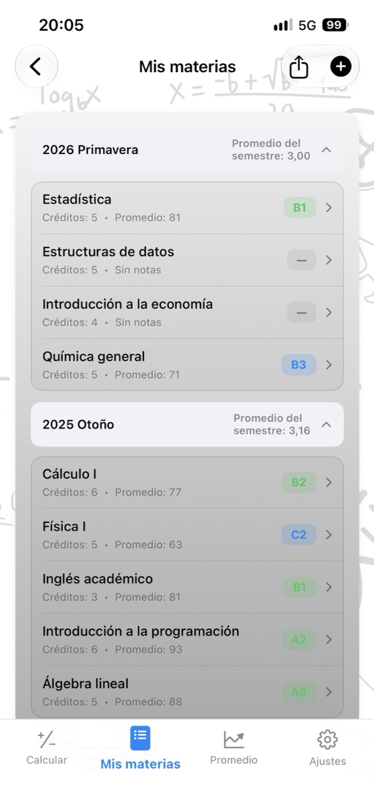
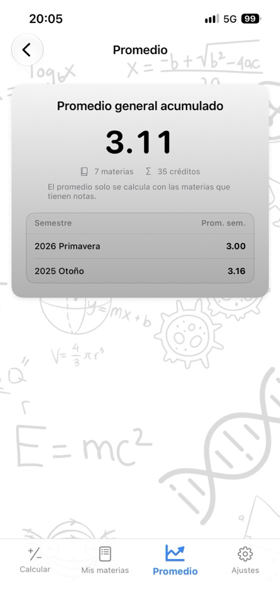
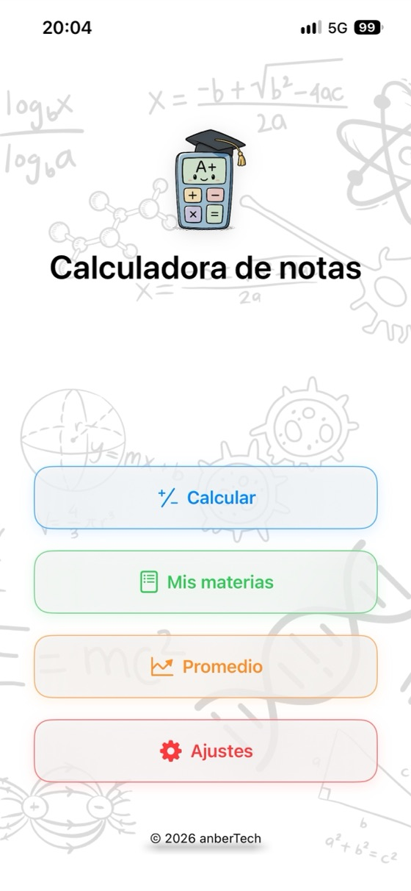
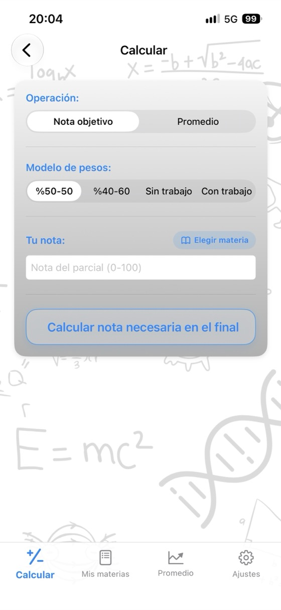
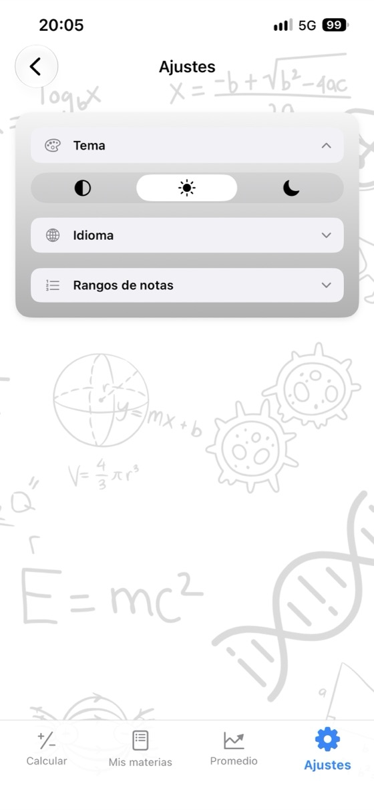

Conoce tu nota,
planifica tu futuro.
El promedio de la asignatura, la nota que necesitas en el examen final y tu GPA, todo en una app. Sin anuncios, sin cuenta y totalmente sin conexión.
- ✓ Gratis
- ✓ Sin anuncios
- ✓ Sin cuenta
- ✓ Sin conexión


Calcula ahora
Pruébala aquí antes de descargar la app. Cambia los valores y el resultado se actualizará al instante.
Peso del examen final: 60%
Peso del examen final: 60%
Calculadoras gratuitas
Úsalas en el navegador sin descargar nada. No necesitas registrarte y las notas que introduces nunca salen de tu dispositivo.
¿Por qué elegir Calculadora de notas?
Promedio de la asignatura
Introduce las notas del parcial, el examen final y los trabajos con sus pesos para ver al instante tu promedio y tu nota en letra.
Final necesario
Consulta en una sola pantalla la nota mínima que necesitas en el examen final para obtener cada nota en letra.
Seguimiento del GPA
Guarda tus asignaturas por semestre; tu promedio semestral y tu promedio general acumulado se actualizan automáticamente.
Tu propia escala de calificación
Edita los intervalos de las notas en letra y sus puntos para adaptarlos a tu universidad.
Informe de notas en PDF
Comparte tus asignaturas y tu promedio como PDF con un solo toque.
17 idiomas
Inglés, español, alemán, japonés, árabe, turco y muchos más.
Privacidad ante todo
Sin cuenta, anuncios ni seguimiento. Tus datos permanecen en tu dispositivo.
Funciona sin conexión
No necesitas internet: durante los exámenes, en la biblioteca o donde quieras.
Descubre la app



Preguntas frecuentes
¿Cómo calculo el promedio de una asignatura?
Multiplica cada nota por su peso y suma los resultados. Con un parcial del 40% y un examen final del 60%: promedio = parcial × 0.40 + final × 0.60. Un 62 en el parcial y un 75 en el final dan 62 × 0.40 + 75 × 0.60 = 69.8. Si hay un trabajo, añade también su nota ponderada; los pesos deben sumar 100%.
¿Qué necesito sacar en el examen final para aprobar?
Final necesario = (promedio objetivo − parcial × peso del parcial) ÷ peso del final. Con un 55 en un parcial que vale el 40% y un promedio mínimo de 50 para aprobar: (50 − 22) ÷ 0.60 = 46.7, así que necesitas al menos un 47 en el examen final. Calculadora de notas lo calcula a la vez para todas las notas en letra.
¿Cómo se calcula el GPA?
Multiplica los puntos de cada asignatura (A = 4.0, B = 3.0 …) por sus créditos, suma los resultados y divide entre el total de créditos. El resultado es tu promedio de calificaciones o GPA en una escala de 4.0.
¿Los intervalos de las notas en letra son iguales en todas partes?
No. Los intervalos y los puntos varían entre países, universidades e incluso asignaturas. En la app puedes editar la escala de calificación para adaptarla exactamente a la tuya.
¿Qué es una nota mínima en el examen final?
Algunas universidades te hacen suspender si tu nota del examen final está por debajo de un valor determinado, por ejemplo 30, 45 o 50, aunque tu promedio sea suficiente. Introduce el mínimo y la nota final necesaria lo tendrá en cuenta.
¿Calculadora de notas es gratis?
Sí. La app es gratis en App Store, sin anuncios, suscripciones ni compras dentro de la app. Las calculadoras de este sitio también son gratuitas.
¿Dónde se guardan mis notas?
Solo en tu dispositivo. No necesitas una cuenta y no se envía nada a ningún servidor. Las notas que introduces en las calculadoras web nunca salen de tu navegador.
¿Hay una versión para Android?
La versión para Android llegará próximamente a Google Play. Por ahora, la app está disponible para iPhone y iPad (iOS 17.6 o posterior) en App Store.
Controla todas tus asignaturas desde un solo lugar
Gratis. Sin anuncios. Sin cuenta.